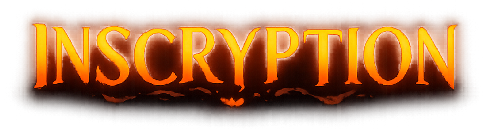

Inscryption
Retour aux Aventures terminées
La Guilde se retrouve piégée dans une étrange cabane au cœur d’une forêt, contrainte de jouer à un jeu de cartes dont les règles semblent cacher bien plus qu’elles ne le devraient.
📜 Informations de l'expédition
Origine : Aventure principale 🏆
Statut : Accomplie 🏆
📅 Début : Août 2023
🎮 Type : Roguelike / Jeu de cartes / Horreur / Énigmes
👥 Participants : MK
📖 Histoire de l'aventure
Piégé dans une mystérieuse cabane, un joueur sans souvenir se retrouve face à Leshy, une étrange créature qui lui impose une partie de cartes aussi macabre qu’inquiétante.
Pour espérer retrouver sa liberté, il devra construire son deck, sacrifier des créatures et progresser à travers une succession d’épreuves toujours plus étranges.
Mais derrière ce jeu en apparence isolé se cachent des secrets bien plus vastes.
À mesure que la Guilde découvre de nouveaux éléments, les frontières entre le jeu, ses créateurs et la réalité commencent peu à peu à s’effondrer.
🎯 Objectifs de l'expédition
- 🃏 Maîtriser les règles et construire le deck ultime
- 🕯️ Percer les mystères de la cabane
- 👁️ Découvrir ce qui se cache derrière Inscryption
🎬 Souvenirs de l'expédition
Retrouvez les chroniques de cette aventure.